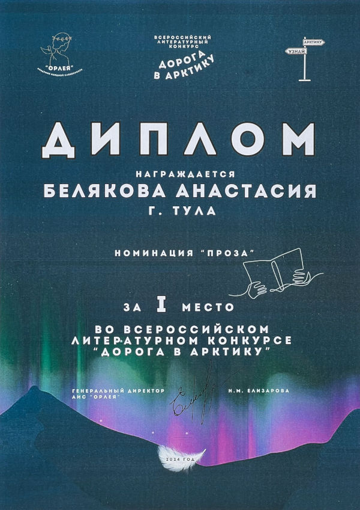
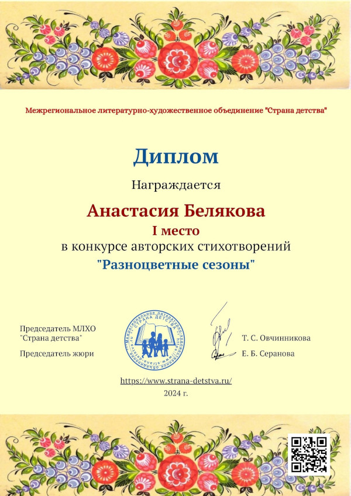
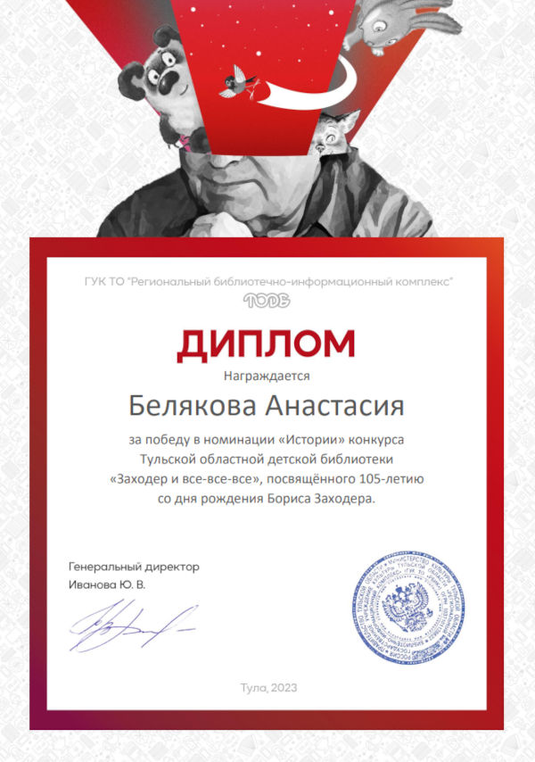
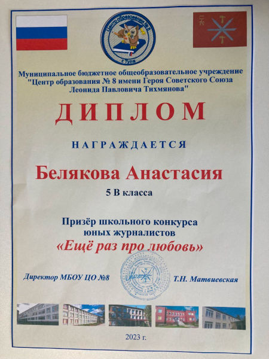
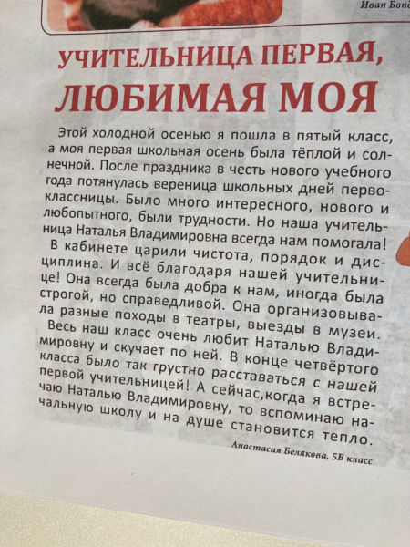
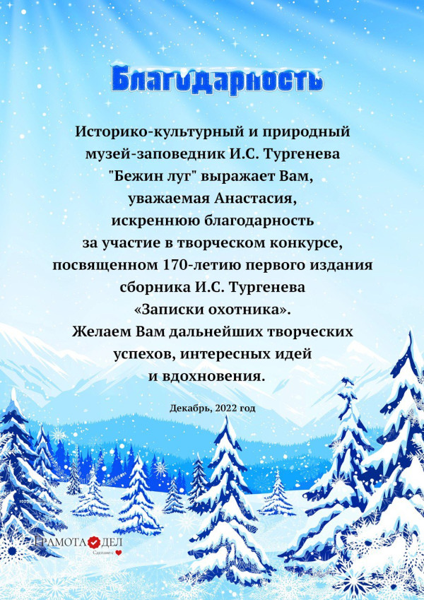
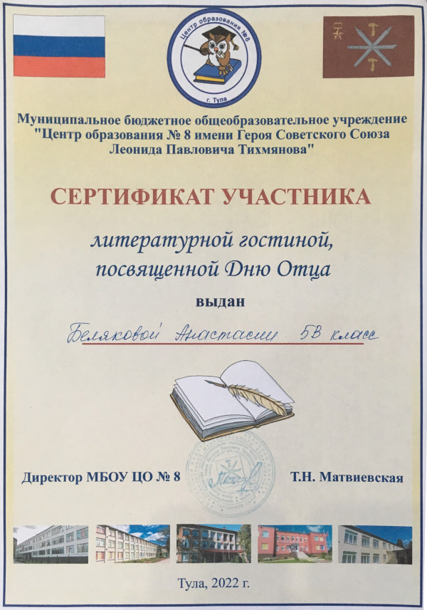

Новости
Новости в Telegram и VK
Чтобы не пропускать новости, подпишитесь на канал сайта в Telegram или страницу ВКонтакте .
10.02.2026: Премия Жуковского
9 февраля в городе Туле состоялось награждение лауреатов премии Правительства Тульской области имени Василия Андреевича Жуковского.
Василий Жуковский – один из классиков русской литературы, которыми гордится Тульская земля. Правительство Тульской области учредило Премию имени В.А. Жуковского, чтобы сохранить память о писателе прошлого и поддержать молодых авторов настоящего.
Жуковский известен как наставник Александра Пушкина, оказавший на него огромное влияние. Жуковский был учителем императорских детей и чувствовал себя в ответе за будущее всей страны.
Подборка моих стихотворений удостоена диплома лауреата премии второй степени.
Диплом Правительства Тульской области

30.01.2026: Стихотворение “Два брата”
Зимней ночью, когда город засыпает, посреди парка встречаются Два брата. Кто же они?
30.12.2025: Стихотворение “Снежный лес”
Среди городского шума и суеты порой забываешь о красоте зимы. Поэтому на праздниках хорошо отправиться погулять в Снежный лес.
20.12.2025: Фанфик “Десятая в Братстве”
В течение года я писала большую юмористическую историю по мотивам вселенной “Властелин Колец”. И наконец-то я упорядочила и опубликовала это любительское сочинение.
Мрак сгущается над Средиземьем… Тёмный властелин Саурон разыскивает давно утерянное Единое Кольцо, с которым он получит безграничную власть… Сможет ли Братство Кольца спасти этот мир? Однозначно! Ведь к отряду присоединяется Настёна – бесшабашная попаданка и фанатка творчества Толкина. К тому же с ней на удачу оказался её смартфон, так что все похождения Братства записаны в заметки для потомков. А прочитать их вы можете в моём завершённом фанфике Десятая в Братстве.
14.12.2025: Стихотворение “Неправильная дверь”
Порой не все радуются наступлению зимы. И когда выходишь на прогулку кажется, что открывается Неправильная дверь.
04.12.2025: Стихотворение “Предновогоднее”
Уже с ноября в холодном воздухе витает Предновогоднее настроение. Главное – сохранить его под дождём и в тумане до 31 декабря…
05.11.2025: Стихотворение “Привет”
Воспоминания об ушедшем лете – в безглагольном стихотворении Привет.
26.10.2025: Стихотворение “Помнишь?”
Читайте новое стихотворение для детей – Помнишь?
19.10.2025: Стихотворение “Ящики стола”
Ящики стола могут скрывать много интересного и незаслуженно забытого. Что же в них?
14.09.2025: Стихотворение “Грибочек”
Новое детское стихотворение – Грибочек.
17.05.2025: Рассказ “Око звёзд”
В мире, где у каждого Знака Зодиака есть магическое Око звёзд, позволяющее видеть судьбы людей, Змееносец – изгой, мечтающий присоединиться к их кругу. Рассказ Око Звёзд – история о свободе, судьбе и вере в то, что человек – хозяин своей судьбы.
26.04.2025: Стихотворение “Вечерняя весна”
На закате я люблю сидеть у окна, наблюдая за небом. Мир окрашивается в нежные тона и словно становится другим – чуточку добрее и прекраснее. Такая эта Вечерняя весна.
20.03.2025: Стихотворение “Другие пути”
Школьная жизнь вдохновила меня написать стихотворение Другие пути.
11.01.2025: Стихотворение “Январские фиалки”
Сегодня в палисаднике пятиэтажного дома я заметила фиалки, которые выросли несмотря на январь. Меня удивили эти весенние цветы, и я написала про них стихотворение Январские фиалки.
04.12.2024 Заметка о финансовой грамотности
Моя заметка о финансовой грамотности напечатана в детском журнале “Золотой ключик” №10 (766), 2024 (Липецк).
{kind=link}
{kind=link}
20.11.2024: Стихотворение “Сон учителя”
Что снится учителям? Не знаю, скажу честно. Но попробовала представить в стихотворении Сон учителя.
17.11.2024: Новые стихотворения
Новые стихи для детей:
01.11.2024: Перевод песни BTS – Dynamite
Продолжаю “работать” переводчиком. Мой второй эквиритмический перевод – Динамит. Перевод песни BTS (БТС) – Dynamite.
27.10.2024: Журнал “Чердобрячок”
Мое стихотворение Птичий обед напечатано в журнале “Чердобрячок” – спецвыпуске пензенского журнала “Чердобряк”. В нём всё сделано детьми – обложка, тексты, фотографии и рисунки (кроме конечно вёрстки и печати).
23.10.2024: Перевод песни Park Jimin (Пак Чимин) – Who
Решила попробовать свои силы в роли переводчика с английского. Результатом стал мой первый эквиритмический перевод – Кого? Перевод песни Park Jimin (Пак Чимин) – Who.
17.10.2024: Стихотворение “Поиски лета”
Когда не хочешь верить календарю с надписью “Октябрь”, приходится отправляться на Поиски лета!
17.10.2024: Стихотворение “Если спросят”
Если спросят о чём угодно, ответ в октябре будет один…
13.10.2024: Стихотворение “Городу Орёл”
Городу Орёл – стихотворение о двух встречах с литературной столицей России.
02.10.2024: Новые стихотворения
Новые стихотворения в разделе “Моменты жизни”:
Новые стихи для детей:
16.08.2024: Стихотворение “Автопортрет”
Ура, мне 13! И в День рождения я хотела бы поделится своим Автопортретом. Спасибо, что читаете моё творчество, для меня это очень ценно! 💜
30.07.2024: Стихотворение “Следы лета”
Кажется, только вчера было первое июня. Но вот уже июль подходит к концу, оставляя пока заметные и яркие Следы лета.
09.07.2024: Стихотворение “Роль дракона”
Динозавры давным-давно вымерли, их родственники драконы остались только на страницах книг, ящерицы прячутся по камням и щелям… А может, всему виной прогресс? Как найти Роль дракона, если ты сам дракон?
21.06.2024: Стихотворение “Прогнозистам”
В последнее время погода по всей России очень переменчива и совершенно не подвластна Прогнозистам. Но это неудивительно, ведь предсказания – дело нелёгкое…
05.06.2024: Стихотворение “Летние мечты”
Впереди три тёплых и свободных месяца, которые обязательно осуществят все Летние мечты. Главное верить в них…
04.06.2024: Конкурс “Волшебник из Переделкина”
Совсем недавно были подведены итоги конкурса “Волшебник из Переделкина”, посвящённого творчеству Корнея Ивановича Чуковского. Этот конкурс объединил писателей, художников, чтецов и актёров из разных областей нашей страны. Председатель жюри – известная детская писательница Тамара Шамильевна Крюкова. Вместе со своим рассказом Как Петя заварил кашу я стала лауреатом в литературной номинации. Спасибо жюри за высокую оценку моего творчества!
Диплом

27.05.2024: Стихотворение “В Поленово”
В Тульской области, на берегу реки Оки, неподалёку от села Бёхово, есть замечательное место – Музей-заповедник Василия Дмитриевича Поленова, русского живописца и удивительного мастера пейзажей. Вдохновившись поездками в эти места я написала стихотворение, которое так и назвала – В Поленово. А в этом году, 1 июня, исполняется 180 лет со дня рождения Василия Дмитриевича. В честь этого события праправнучка великого художника Аня Алямова нарисовала юбилейные открытки, и под Новый год мне посчастливилось получить одну из них по почте от самого музея!
Открытка из Поленово
19.05.2024: Рассказ “Северное лето”
Феде предстоит его первое лето в Мурманске – незнакомом для него северном городе. Но тут его отцу, геологу, предлагают отправиться в экспедицию на далёкий и неизведанный остров Чамп. Сумеет ли Федя переубедить отца, собирающегося в путь? Раскроется ли загадка таинственных каменных шаров Земли Франца-Иосифа? Какая угроза таится на острове? Узнаете из моего нового рассказа Северное лето! Я написала это произведение специально для Всероссийского конкурса “Дорога в Арктику”, который проводила Академия изящной словесности “Орлея”, и заняла в этом конкурсе первое место.
Диплом и благодарственное письмо


13.05.2024: Рассказ “Птенец”
Добро – это удивительная сила! Ведь от него становится тепло на душе, оно дарит счастье и тому, для кого совершается доброе дело, и тому, кто стремится поделиться своей добротой. Но всегда ли доброта действительно помогает? С этим вопросом сталкиваются герои моего нового рассказа Птенец.
05.05.2024: Стихотворение “Счастье”
Вдохновившись весенней поездкой в Пушкиногорье, по дороге домой, я написала стихотворение Счастье, которым я хочу поделится с вами.
29.04.2024: Новые детские стихотворения
Кто притаился на ветке? Для кого хозяйка приготовила сюрприз? Как уместиться в маленьком корытце? Что за драка случилась в деревенском дворе? Узнаете из моих новых стихотворений о забавных животных:
22.04.2024: Стихотворение “Город и небо”
Ночь – удивительное время. Всё преображается на глазах, а Город и небо меняются местами…
15.04.2024: Стихотворение “Тяжело быть маленьким”
Говорят, что быть малышом очень здорово. А может наоборот, Тяжело быть маленьким? Узнаете из моего нового стихотворения.
08.04.2024: Стихотворение “Аллеи весны”
Весна уже не только на календаре: день становится длиннее, дует тёплый ветер, а солнце на Аллеях весны светит ярче.
01.04.2024: Новые стихотворения о домашних животных
Сегодня день смеха! Читайте мои новые весёлые стихотворения о шалостях котиков и пёсиков: Кот против рассады и Преданность. Забавные иллюстрации к стихотворениям созданы моим бессменным иллюстратором – нейросетью Midjourney.
26.03.2024: Слёт юных писателей и поэтов
21-22 марта я приняла участие во Всероссийском творческом слёте юных писателей и поэтов “Он победил и время, и пространство” в Пушкинских Горах, Псков.
За эти два ярких дня я побывала во многих исторических местах: увидела неприступный Псковский кремль, место слияния рек Псковы и Великой, множество старинных храмов, посетила Псковскую библиотеку им. В. А. Каверина.
Я посетила могилу А. С. Пушкина и его родовое имение Михайловское. Меня удивила красота этих мест: хвойные леса, разлив реки, старая мельница. Несмотря на то, что деревья ещё не распустили свои листья, казалось, что они цветут из-за махровых лишайников.
Заключением слёта стал концерт в Пушкинском заповеднике, где прозвучали произведения талантливых ребят со всей России.
Организаторы слёта выбрали моё стихотворение Линии чернил, которое я и прочитала на сцене концертного зала.
Спасибо большое Ольге Владимировне Федоскиной и Оксане Николаевне Рахмановой за возможность стать частью этого яркого творческого события!
Сертификат участника слёта

14.03.2024: Мои публикации
14.03.2024: Ещё три стихотворения для детей
Мои новые стихотворения для детей победили в литературном конкурсе “Детство золотое”, который проводило межрегиональное литературно-художественное объединение “Страна детства”.
Диплом конкурса "Детство золотое"

Читайте новинки:
12.03.2024: Творческая встреча
По приглашению Пушкинской библиотеки моего города я провела творческую встречу с пятиклассниками одной из тульских школ. Говорили о стихосложении, прозе, фанфиках, затронули тему нейросетей. Особенный интерес у ребят вызвал вопрос, как издать свою книгу. В конце мероприятия самая активная участница получила в подарок книгу. Спасибо библиотеке за приглашение, а ребятам – за интерес и участие!
06.03.2024: Встреча с читателями и стихотворение “Восьмое марта”
В преддверии Международного женского дня я провела встречу с читателями. Я рассказала первоклассникам о стихосложении, почитала свои произведения и подарила всем авторские праздничные открытки со своим стихотворением Восьмое марта. На открытках ребята написали поздравления для мам и бабушек.

29.02.2024: Рассказ “Звёзды меж ветвей”
За несколько часов до весны всё становится другим, особенно в окутанном золотистым светом фонарей парке. Но только под покровом елей можно увидеть, как зажигаются Звёзды меж ветвей.
22.02.2024: Статья “Яблочки с дуба”
Однажды, гуляя осенью по парку, я заметила на обратной стороне дубовых листьев странные наросты, похожие на маленькие яблочки. Что же это такое? Узнаете из новой статьи Яблочки с дуба в моём блоге.
12.02.2024: Новые стихотворения для детей
Кто умеет удивительно преображать мир, раскрашивая его во все цвета радуги? А кому доверить сокровенный секрет? Узнаете из моих новых стихотворений – Братья-пузыри и Тайна!
28.01.2024: Стихотворение “Линии чернил”
Поэзия и проза наделены по-настоящему удивительной силой – хоть они и не несут в себе зрительные представления, в строках всегда появляется и оживает яркий образ. Особенно это видно в вечных произведениях классики. Например, собирательный образ Тургеневских девушек сложился не из рисунков, а из строк. Это уникальная магия слова, которая пронизывает всю литературу, и которую я попробовала описать в своём новом стихотворении Линии чернил.
25.01.2024: Новые победы
Раздел Достижения пополнился двумя дипломами.
За стихотворение Двенадцать:
Диплом конкурса "Разноцветные сезоны"

За рассказ Подарок:
Диплом конкурса "Семейный истории"

21.01.2024: Статья “Сосед сверху”
Недавно над нашей квартирой поселился интересный жилец. С ним вы познакомитесь в моём блоге: Сосед сверху.
14.01.2024: Стихотворение “Зимний сон”
Когда заканчиваются новогодние праздники, уже хочется тепла и наступления лета, как в моём новом стихотворении Зимний сон.
07.01.2024: Стихотворение “Двенадцать”
Начинаю новый творческий год с нового стихотворения Двенадцать! В нём вы встретитесь со всеми месяцами года.
01.01.2024: Когда же родилась ёлочка?
Без песенки “В лесу родилась ёлочка” нельзя представить новогодних праздников. Как же она появилась? Узнаете из моего сюжета, снятого школьной телестудией.
29.12.2023: Новогоднее прочтение стихотворения “Тихо трепещет заснеженный лес…”
Поздравляю вас с наступающим Новым годом! Пусть он принесёт с собой только хорошее! В преддверии праздника я хочу поделиться с вами новогодним прочтением своего стихотворения Тихо трепещет заснеженный лес.
Слушать стихотворение
28.12.2023: Мои комментарии к рассказу “Первый на орбите”
Рассказ “Первый на орбите” содержит множество отсылок к популярным произведениям массовой культуры, а также к известным стереотипам о повадках котиков. Наверняка, многие из них вы заметили, когда читали этот рассказ в первый раз. Но все ли отсылки вы нашли? Сегодня я добавила в текст рассказа сноски с комментариями. Если вы интересуетесь научной фантастикой, компьютерными играми и заодно любите котиков – перечитайте рассказ еще раз, теперь с авторскими комментариями в сносках!
20.12.2023: Рассказ “Пуговица”
Приятных предновогодних домашних хлопот! Тёплых воспоминаний от внезапно найденной в укромном уголке старой вещи, как в моей новой миниатюре Пуговица.
12.12.2023: Стихотворение “Зимняя прогулка”
Уютные зимние дни можно провести по-разному: закутавшись в тёплый плед пить чай, отправиться по модным магазинам, собраться в гости к друзьям… А можно навестить парковых белочек, как в моём новом стихотворении Зимняя прогулка.
29.11.2023: Видео “Гимн российского боулспорта”
К моим стихам Гимн российского боулспорта была написана музыка. Исполнение гимна солистами Тульской областной филармонии слушайте и смотрите на видео.
20.11.2023: Стихотворение “Птичий обед” награждено дипломом
Стихотворение Птичий обед награждено дипломом за победу во всероссийском конкурсе “Птичьи истории”, который проводило литературно-художественное объединение “Страна детства”.
Диплом "Птичьи истории"

20.11.2023: Рассказ “Киты и коты”
К 105-летию со дня рождения Бориса Заходера (по мотивам стихотворения “Кот и кит”) я написала новый рассказ Киты и коты. Это произведение победило в конкурсе “Заходер и все-все-все”, который проводила Тульская областная детская библиотека.
Диплом "Заходер и все-все-все"

13.11.2023: Стихотворение “Потеря”
Я написала новое стихотворение Потеря, ведь люди часто что-то теряют. К счастью, пропажи находятся. Но всегда ли всё так просто?
13.11.2023: Видео-сюжет по очерку “Тургеневские острова”
Сюжет “Тургеневские острова” с моим участием, снятый в школьной телестудии размещён в статье Тургеневские острова.
04.11.2023: Очерк “Тургеневские острова”
9 ноября 2023 года исполнится 205 лет со дня рождения Ивана Сергеевича Тургенева. Я написала очерк Тургеневские острова, посвящённый малоизвестной истории из детства великого писателя.
12.10.2023: Стихотворение “Скверик осени”
Вот и пришла поздняя осень… Прогуливаясь по городскому скверику, я вдохновилась на новое стихотворение Скверик осени. Ведь мелкий дождь и статные тополя могут рассказать нам свои истории…
30.09.2023: День рождения сайта
Ура! Моему сайту исполнилось двенадцать месяцев! Ровно год назад он был запущен, и на этой странице была опубликована первая новость! 🎉
За это время сайт посетило около 6000 читателей из 59 стран! Было опубликовано 20 новых стихов, 10 рассказов, 2 сказки, 2 фанфика, 7 загадок! Добавились добрые красочные иллюстрации в акварельном стиле. Появился новый раздел “Боулспорт”, а главное – издана моя первая книга “Рассказы, сказки, стихи”! Мои произведения публиковались в интернет-изданиях и в печатном виде.
Сайт обзавёлся соцсетями – ВКонтакте и Телеграм. Спасибо подписчикам, что вы со мной!
За этот год я многому научилась, стараюсь совершенствовать свои навыки писательства, ведения блога. Спасибо всем за поддержку!
23.09.2023: Загадки
Я сочинила новые загадки. Хотите попробовать отгадать? Чтобы потом проверить себя, нажмите на слово Отгадка, и вы увидите правильный ответ. Удачи!
08.09.2023: Рассказ “Чудо добра”
Чудо – это не обязательно волшебство, сложная магия, единороги и огромные замки. Ведь чудо может сделать даже обычный школьник. Не верите? Прочтите мой новый рассказ Чудо добра об удивительном происшествии в палеонтологическом музее!
16.08.2023: Дмитрий Кравченко читает моё стихотворение
Моё стихотворение В ожидании рассвета читает известный писатель и поэт Дмитрий Кравченко.
P.S. Сегодня у меня день рождения 🥳 – получился отличный творческий подарок на двенадцатилетие! 🙂
07.08.2023: Стихотворение “Старый рояль”
Путешествуя по нашей стране, я встречала заброшенные дачи, дома. Таинственные узоры трещин на их стенах, шорох травы, выросшей в щелях, вдохновили меня на новый стих. Заголовок я ему дала по названию известной песни из кинофильма “Мы из джаза” – Старый рояль. При чём здесь рояль? Узнаете из стихотворения!
31.07.2023: Стихотворение “Старый дворец”
Лето – прекрасная пора для путешествий. В давнюю пору было построено множество дворцов, которые теперь стали музеями. Я посетила один из таких музеев и в своём новом стихотворении Старый дворец описала свои эмоции от этой экскурсии.
15.07.2023: Рассказ “Как Петя заварил кашу”
Этот рассказ – один из первых, опубликованных на моём сайте. Полгода назад я участвовала в конкурсе “Ох уж эти дети”, который проводило издательство “Мелик-Пашаев”. Специально для конкурса я переписала этот рассказ, чтобы он подходил для детей дошкольного возраста: сократила объём и поменяла некоторые сюжетные детали. Теперь я публикую на сайте новую версию рассказа.
06.07.2023: Стихотворение “Ромашка”
Длинные библиотечные стеллажи могут скрывать в себе много тайн и историй. Причём не только книжных, но и настоящих. В своём новом стихотворении Ромашка я написала об одной неожиданной находке меж страниц старой книги.
29.06.2023: Детский литературный интернет-журнал “Мавочки и Дельчики”
В мае 2023 года меня приняли в постоянные авторы детского литературного интернет-журнала “Мавочки и Дельчики”. Мой первый рассказ, опубликованный в 186-м номере этого журнала – Лето, в которое случилось это.
Бесплатный благотворительный журнал “Мавочки и Дельчики” выходит с 2007 года и распространяется по подписке. В нём на безвозмездной основе публикуются детские писатели и поэты. Основные читатели журнала – воспитанники детских домов. В России там воспитываются около 400 тысяч детей.
Если вы знаете контакты детских домов, приютов, школ-интернатов и прочих учреждений для неимущих детей, инвалидов и сирот, которые могли бы стать подписчиками журнала “Мавочки и Дельчики”, пришлите их на мою электронную почту lib-beliakova@mail.ru.
23.06.2023: Стихотворение “Лето”
Читайте новое пейзажное стихотворение Лето.
16.06.2023: Стихотворение “После грозы”
Я стараюсь постоянно совершенствовать свои писательские навыки, поэтому время от времени перечитываю и дорабатываю старые произведения. Сейчас лето – пора гроз, и я решила обновить свой стих После грозы.
08.06.2023: Очерк “Ясная Поляна”
Многие знают деревню Ясная Поляна, ведь в ней расположена усадьба великого писателя Льва Николаевича Толстого. Обычно туристы, приезжающие сюда, видят башни въезда, дом писателя, посещают могилу Льва Николаевича. И на этом знакомство с Ясной Поляной у большинства заканчивается. Но я хотела вам рассказать о немного другой Ясной Поляне… Из моего очерка “Ясная Поляна” вы узнаете о многих интересных и красивых местах неподалёку от знаменитой усадьбы. Вы можете использовать маршруты, описанные в нём, и посетить все эти места. В конце очерка я оставила ссылки на маршруты в Яндекс.Картах.
30.05.2023: Стихотворение “Коты-проказники”
Какой кот не любит пошалить? Все их проказы просто невозможно перечислить. Но я попыталась. В моём новом стихе Коты-проказники рассказывается о кошачьих шалостях, привычных и неожиданных.
29.05.2023: Книжный фестиваль “Красная площадь”
Крупнейший литературный фестиваль приглашает книголюбов на Красную площадь в Москве. Фестиваль пройдёт со 2 по 6 июня. Около 400 издательств со всей России представят на нём свои лучшие книги и новинки. В шатре №17 (регионы России) на стенде издательства “Свамия” вы можете приобрести мою книгу “Рассказы, сказки, стихи”.
18.05.2023: Стихотворение “Легенда о Зелёной палочке”
Я написала стихотворение “Легенда о Зелёной палочке”, когда проходила курс “Мы – начинающие поэты” под руководством детского поэта Оксаны Рахмановой. Сюжет стихотворения основан на легенде о зеленой палочке, которую рассказал Л. Н. Толстому его старший брат.
11.05.2023: Моя заметка в газете “Восьмое измерение”
Я попробовала себя в роли корреспондента и написала для школьной газеты “Восьмое измерение” заметку про свою первую учительницу. Мою статью разместили на первой странице.
Заметка и диплом


10.05.2023: Литературные курсы
Я прослушала курсы лекций, организованных “Союзом детских и юношеских писателей”.
- Курс “Литературные курсы блогеров” провела детская писательница Наталья Спехова-Роси.
- Курс “Мы – начинающие поэты” провела детский поэт и поэт-песенник Оксана Рахманова.
- Курс “Сказкотворение. Курс по развитию креативности, воображения и фантазии” провела детская писательница, председатель “Союза детских и юношеских писателей” Светлана Кривошлыкова.
Сертификаты о прохождении курсов


02.05.2023: Произведения о боулспорте
На моём сайте появился новый раздел. Читайте произведения о боулспорте.
А ещё я хотела бы поделится с вами большим событием в моей писательской жизни. Я победила в поэтическом конкурсе “Гимн/Марш боулспорта”. Мой гимн напечатали в брошюрах с правилами боулспорта тиражом несколько сотен экземпляров.
30 апреля состоялось торжественное награждение победителей конкурса. Выражаю огромную благодарность Всероссийской федерации боулспорта и Федерации боулспорта Тульской области.
Диплом и “Гимн российского боулспорта”

22.04.2023: Книга за подписку!
В моём Телеграм-канале проводится розыгрыш моей книги “Рассказы, сказки, стихи”.
16.04.2023: Стихотворение “О весне”
Стихотворение О весне рассказывает о приходе тёплой весны в мой город. К этому стиху я сняла видео, в котором я читаю и играю на фортепиано. Видео вы найдёте под текстом произведения.
11.04.2023: Рассказ “Первый на орбите”
Космос манит всех на Земле. И вот однажды необычный космонавт отправляется на орбиту. Что произойдёт на Международной космической станции? Кто спасёт её экипаж? Читайте новый фантастический рассказ, написанный ко Дню космонавтики – Первый на орбите.
04.04.2023: Рассказ “Соня полосатая”
Вы уже знакомы с Люсей из моего рассказа “Подготовка к празднику”? Читайте свежий рассказ о новых школьных приключениях Люси после весенних каникул – Соня полосатая. Жанр и тему нового произведения выбрали подписчики моего Telegram-канала.
31.03.2023: Писательские курсы
Я прослушала курс лекций детской писательницы Евгении Малинкиной “Творческая лаборатория”. Курс организован “Союзом детских и юношеских писателей”.
Сертификат

21.03.2023: Рассказ “Пробуждение от спячки”
Под весенними лучами все согреваются и становятся добрее. О приходе тепла и пробуждении от зимнего сна говорится в моём новом произведении – Пробуждение от спячки.
14.03.2023: Стихотворение “Ослик”
Этот стих посвящается ослику Паше из конюшни центрального парка моего города. О доброте и мечтах читайте в моём новом произведении – Ослик.
07.03.2023: Рассказ “Подарок”
Наступил март – месяц кошечек. Кто не любит кошек? Ведь они такие мягкие, пушистые, они мурчат и приносят в дом умиротворение… А ещё они цветоводы, принцессы и просто обожают шалить! О проказах кошки Машки, жившей у моих родителей, читайте в моём новом рассказе – Подарок. Это произведение победило в конкурсе “Тайная жизнь наших питомцев”, который проводила Тульская областная детская библиотека и награждено дипломом.
Диплом Тайная жизнь наших питомцев

22.02.2023: Издан сборник моих произведений
Напечатана моя первая книга – “Рассказы, сказки, стихи”. В неё вошли некоторые произведения с этого сайта. Тираж разлетится по детским библиотекам.
Моя книга
15.02.2023: Писательские курсы
Я прослушала курс лекций детской писательницы Екатерины Матюшкиной “Писательское мастерство детям”. Курс организован “Союзом детских и юношеских писателей”.
Сертификат

11.02.2023: Иллюстрации на сайте
Теперь у всех произведений на моём сайте есть иллюстрации. Рисунки созданы нейросетью на основе фрагментов моих произведений.
05.02.2023: Рассказ “Лето, в которое случилось это”
Куда бежит бабушкин петух Петька? Что в таинственной посылке? Читайте новый рассказ о летних приключениях городского мальчика Васи в деревне – Лето, в которое случилось это. Этот рассказ – домашнее задание онлайн-курса “Творческая лаборатория”, организованного “Союзом детских и юношеских писателей”.
02.02.2023: Стихотворение “Вернулась осень…”
Этот стих появился благодаря прочтению произведения Паустовского “Барсучий нос”. Читайте новое стихотворение об осеннем утре – Вернулась осень…
30.01.2023: Конкурс от издательства “Мелик-Пашаев”
Мой рассказ Как Петя заварил кашу принял участие в конкурсе от издательства “Мелик-Пашаев” и попал в лонг-лист.
13.01.2023: Стихотворение “Тихо трепещет заснеженный лес…”
Если кончились новогодние каникулы, то это вовсе не значит, что и чудеса кончились! Ведь они окружают нас повсюду, например, в природе. Читайте мой новый стих, посвящённый чудесам зимней природы – Тихо трепещет заснеженный лес… Это стихотворение я написала в преддверии Старого Нового года.
04.01.2023: Иллюстрации к стихам
Теперь у моих стихов появились иллюстрации.
29.12.2022: Благодарность
Историко-культурный и природный музей-заповедник И. С. Тургенева “Бежин луг” отметил моё стихотворение В деревне благодарственным письмом.
Благодарность

09.12.2022: Стихотворение “На коньках”
Начался декабрь – последний месяц года! Все стремятся в парк, прокатиться на коньках по свежему искристому льду. Моё новое стихотворение На коньках – именно о таких моментах.
27.11.2022: Музыкальный канал на YouTube
Теперь у меня есть Канал на YouTube, где буду выкладывать популярные мелодии в моём исполнении на фортепиано.
25.11.2022: Аудиосказки
Теперь в разделе Сказки вы можете не только читать, но и слушать сказки, озвученные автором.
25.11.2022: Стихотворение “После грозы”
Когда недавно отгремела гроза и небо только-только расчистилось от туч, закат кажется просто волшебным. Такие воспоминания и легли в основу моего нового стиха – После грозы.
12.11.2022: Окончание рассказа “Однажды, под нашим домом…”
Как важно всегда заканчивать начатое! Наконец-то я дописала давно начатый рассказ в стиле фэнтези – Однажды, под нашим домом….
07.11.2022: Стихотворение о птицах
Близятся холода и птицам станет трудно добывать себе пищу. Но мы можем помочь, оставив им в кормушках вкусное угощение! Ведь так приятно наблюдать за тем, как маленькие птахи слетаются на корм, качаются на веточках и нетерпеливо прыгают… Такие мысли и воспоминания вдохновили меня на написание нового стиха – Птичий обед.
05.11.2022: Стихотворение о зиме
Идёт последний месяц осени! Совсем скоро подуют метели, засвистят ветра, пруды и реки засверкают, как льдистые зеркала… Моё новое стихотворение – Шаги зимы – как раз о приходе этого холодного, но по-своему прекрасного времени года.
05.11.2022: Результаты конкурса “Весёлый багаж”
Мои загадки участвовали в конкурсе “Веселый багаж”.
Грамота

27.10.2022: Сказка о Маше-Растеряше
Порой поход в магазин за новым платьем может обернуться неожиданным приключением. Особенно, если поблизости окажется добропорядочный дракон. В такое приключение и попала царевна Маша, главная героиня моей новой юмористической истории – Сказки о Маше-Растеряше.
23.10.2022: Стих о рассвете
Утро – поистине волшебное время. Небо покрывается нежным румянцем, свежий ветерок залетает в комнату… Моё новое произведение – стихотворение В ожидании рассвета – именно о такой поре.
20.10.2022: Канал в Telegram
У меня появился канал в Telegram . Я буду публиковать там анонсы новинок этого сайта. Подписывайтесь!
15.10.2022: Стих о закате
В тёплых лучах заходящего солнца мир начинает казаться иным. Закатный свет проникает в самое сердце, пробуждая вдохновение. Сегодня вечером в такие минуты я и написала стих На закате.
14.10.2022: Стихотворение о море
Каждому автору знаком творческий кризис. Кому-то помогает чашка чая, кому-то – пробежка. Ну а мне приносит вдохновение море. Об этом и говорится в моём новом стихе Берег поэзии.
13.10.2022: Литературная гостиная
Сегодня в моей школе проходил конкурс чтецов “Литературная гостиная”, посвящённый Дню Отца. Я приняла участие, прочитав собственное стихотворение Мой папа, и получила сертификат.
Сертификат участника

12.10.2022: Новый стих про осень
Читайте новинку! Свежее стихотворение Осенний парад.
08.10.2022: Новый стих про папу
Читайте новинку – стихотворение Мой папа.
03.10.2022: Конкурс “Веселый багаж”
Мои загадки приняты на конкурс “Веселый багаж”. Этот конкурс проводит Тульская областная детская библиотека к 135-летию со дня рождения Самуила Яковлевича Маршака.
02.10.2022: Новые стихи
Читайте новинки: стихотворения В деревне и Дыхание ноября!
30.09.2022: Сайт опубликован
Мой сайт опубликован! Ура!